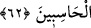

– “Kadınları niçin yarattın?” dediler.
Allah Teâlâ:
– “Neslin devamı için.” buyurdu.
Melekler:
– “Kendisine bu ölümün musallat olduğu kimse, hiç kadın ve dünya ile meşgul
olabilir mi?” dediler.
Allah Teâlâ:
– “Uzun emel, onlara ölümü unutturur. Böylece onlardan bazıları dünyânın ve
kadınların şehvetinin peşine düşer.” buyurdu.
İşte bundan dolayı denilmiştir ki: “Ölüm, insanın başına gelen musibetlerin en
büyüğüdür. Ondan daha da büyüğü onu unutmaktır.”
62. Sonra insanlar gerçek sahipleri olan Allah’a döndürülürler. Bilesiniz ki hüküm
yalnız O’nundur ve O hesap görenlerin en çabuğudur.
Tekrar diriltildikten “sonra onlar,” melekler tarafından “gerçek” ancak adaletle
hükmeden “sahipleri olan” mutlak olarak onların işlerine sahip olan malikleri
“Allah’a” O’nun hükmüne ve hesap günündeki cezasına “döndürülürler.”
“Allah’a döndürülmek” zâhirî mânâda değildir. Çünkü Allah Teâlâ mekan ve yönden
yücedir. Bu, onların Allah’dan başka bir mâlik ve hâkimin bulunmadığı yere sevk
olunarak O’nun hükmüne, kaza ve kaderine boyun eğdirilip itâat ettirilmelerinden
ibarettir.
Mevlâ, kelimesi âyette “sahip” anlamındadır. “Kafirlerin ise mevlâsı yoktur.”
(Muhammed, 47/11) âyetinde ise “yardımcı” anlamındadır. Onun için arada bir çelişki
yoktur.
“Doğrusu” iyi bilin ve dikkat edin ki o gün kullar arasında “hüküm, yalnız
O’nundur.” Başkasının hiçbir şekilde buna yetkisi yoktur.
“O, hesap görenlerin en çabuğudur.” En hızlı ve kısa zamanda bütün mahlukatın
hesabını görür. Bir hesabı görmesi, başka bir hesabı görmesine mani olmaz, bir iş O’nu
başka bir işten alıkoymaz. Vasıtayla konuşmaz, tefekküre, düşünmeye, el bağlamaya
ihtiyacı yoktur.
Muhasebe’nin manası, herkesin hak ettiği sevap ve cezayı belirlemektir. Âlimlerden
birisi demiştir ki: Muhasebe, amelleri takdir edip ölçmek içindir. Mizan, miktarlarını
ortaya çıkarmak içindir. Hesap, mizandan öncedir. Bu yüzden hesapsız cennete giren
kimsenin mizanı olmaz.
Bil ki, haşr ve hesap bu yeryüzünde değil, değiştirilen yeryüzünde olacaktır. O, gümüş